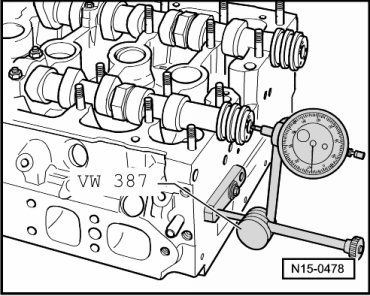

Camshafts, Checking Axial Play
Camshafts, Checking Axial Play
Special tools, testers and auxiliary items required
• Dial gauge holder (VW 387)
• Dial gauge
Test Sequence
Perform measurements with support elements and roller rocker levers removed.
Center bearing cap of respective camshaft installed.
- Fasten dial gauge holder (VW 387) with installed dial gauge to cylinder head as shown and measure axial clearance

Wear limit: max. 0.10 mm